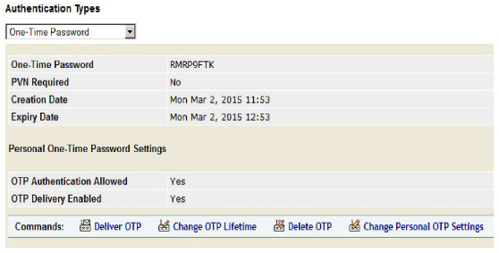
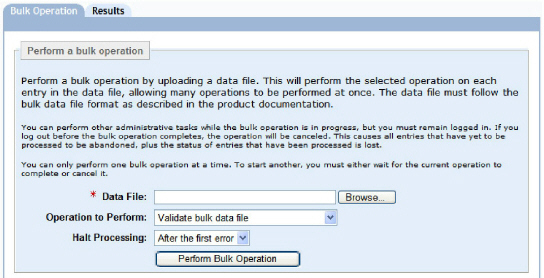
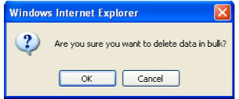

|
IdentityGuard Server 13.0 Administration Guide |
|
IdentityGuard Server 13.0 Administration Guide |
You can delete out-of-band one-time passwords before they are used. If the user has more than on OTP, all the OTPs are deleted.
Administrators must have the correct role permissions to complete these procedures. See User one-time password permissions for a list of all role permissions relating to one-time passwords.
1. Log in to the Entrust IdentityGuard Administration interface as the administrator.
 On the
Windows computer where Entrust IdentityGuard is installed
On the
Windows computer where Entrust IdentityGuard is installed
2. Click User Accounts on the main menu.
3. Find a specific user (see Searching for users with an out-of-band one-time password ).
4. On the Account Information pane, click One-time Password to see the OTP details.

5. Click Delete OTP to delete all of the user’s OTPs.
6. When prompted, click OK to confirm deletion.
To delete one-time passwords from multiple users using bulk operations
1. Create a bulk file (see Create a bulk file).
2. Log in to the Administration interface.
3. In the main menu, click Bulk Operations.
The Bulk Operations page appears.

4. Click the Bulk Operation tab.
5. Click the Browse button to locate the bulk file.
6. Select Delete user OTPs from the Operation to Perform drop-down list.
7. From the Halt Processing drop-down list, select the number of errors to allow before processing stops due to too many errors. (See Validate a bulk file.)
8. Click Perform Bulk Operation.
If you selected Delete user OTPs, a dialog box appears. Click OK.

The Bulk Operation in Progress pane appears. This page indicates the initial status of the operation.
9. Optional. To view the current status of the bulk operation, click Update Results. When Entrust IdentityGuard completes the bulk operation, the Results page appears.
10. Click Done to return to the Bulk Operations page.